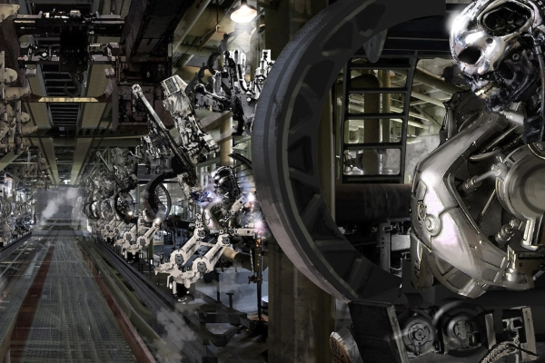

Manufacturing
We are transforming scientific research as well as everyday life, from communications to transportation to health care and more.
We are transforming scientific research as well as everyday life, from communications to transportation to health care and more.
Our latest achievements in bio-technology allow us to create cybernetic organisms with living tissue over metal endoskeleton.
A timely and reliable source of spare parts is critical in ensuring your equipment consistently operates at peak efficiency. We’ll help you overcome challenges with obsolete parts, part failures, and damaged units.
Cyberdyne restores your equipment to original functionality and specifications. Expect full compliance to diagnostic procedures, firmware upgrades, and service notes. Cyberdyne goes beyond repair services to ensure you get the maximum out of your assets.
Cyberdyne supports an extensive group of legacy instruments with custom repair and calibration services. Affordably upgrade or migrate to new units, extend the life of legacy equipment, and seamlessly transition to the latest technology.